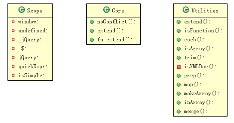

转自: http://bencode.javaeye.com/blog/573349
使用jquery两年多了, 我最早是使用的是prototype库，后来使用mootools， 直到后来弟弟推荐我使用jquery(他是个UI设计师)，就一直用到现在。 我是被它的简洁和精炼所吸引的。
我喜欢看源代码，以前开发eclipse rcp时，就喜欢看eclipse的源码，因为有时候API文档并不那么明了，eclipse优秀的架构配合JDT强大的功能，让我们很容易地看懂。 一个设计优秀的产品，它的代码应该也是易于理解的。 现在我做web用的是php的ci，在开发过程中也是时常查看它的源代码。
为了更好地使用jquery, 所以我阅读了jquery的源代码。不敢独享，所以写出来，相互讨论，一起进步。
我使用的是 1.3.2
我们从开始的地方开始 ：
(function() {
...
})();
所有代码包含在以上的函数中，避免名字冲突。
1. 几个"全局变量"
var
window = this,
undefined,
_jQuery = window.jQuery,
_$ = window.$,
jQuery = window.jQuery = window.$ = function(selector, context) {
return new jQuery.fn.init(selector, context);
},
// A simple way to check for HTML strings or ID strings
quickExpr = /^[^<]*(<(.|\s)+>)[^>]*$|^#([\w-]+)$/,
// Is it a simple selector
isSimple = /^.[^:#\[\.,]*$/;
1.1
window 还是那个window, undefined 还是那个undefined，只是这样让js 解释器更快地找到他们，提高速度。
_jQuery = window.jQuery
_$ = window.$,
保存原来的 jQuery 和 $, 因为默认情况下jquery占用名字空间 jQuery 和$
搜索一下使用 _jQuery的地方吧：
jQuery.extend({
noConflict: function( deep ) {
window.$ = _$;
if ( deep )
window.jQuery = _jQuery;
return jQuery;
},
OK， 是为了 noConflict。
比如我们要同时使用prototype和jquery, 可以先让html页面包含 prototype.js 再包含 jquery.js。
然后调用 jq = jQuery.noConflict(); 接着就可以用jq来使用jQuery框架， $ 就变回 prototype.js 中的方法了。
还有一个deep参数， 可以让另一个jQuery(可能不怎么有名， 但对你的项目有用) 和 现在的jQuery 共存。
quickExpr: 是一个正则表达式， 用于快速匹配一个 html tag 或 id 字符串（如 '#id')
isSimple: 也是一个与此同时表达式, 用于匹配一个 selector (css 选择器)
1.2
jQuery = window.jQuery = window.$ = function(selector, context) {
return new jQuery.fn.init(selector, context);
},
我们思考： jQuery.fn.init 是构造函数， 那它的实例方法应该由 : jQuery.fn.init.prototype 指定。
搜索它， 在541行得到以下代码：
jQuery.fn.init.prototype = jQuery.fn;
所以 我们平常使用 $('#abc') 或 jQuery('#abc')
$ 就是 jQuery，它返回一个对象。 这个对象的构造函数是 jQuery.fn.init(...
这个对象的实例方法和字段就是 jQuery.fn 的成员。
jQuery.fn = jQuery.prototype = {
init: function( selector, context ) {
...
},
size: function() {
return this.length;
},
...
从以上可以看出，下面的代码等效。
var a = $('#id'); // a = new jQuery('#id');
a.size();
上面我们隐约看到了jQuery的插件结构， 你可以添加方法到 jQuery.fn，就可以在jQuery对象中使用。
但首先，我们先看几个通用工具方法，因为其他很多部分使用它们。
2. 几个工具方法
2.1 jQuery.extend = jQuery.fn.extend = function() {
我们分两部分看这个方法：首先是准备， 然后是拷贝。
准备：
jQuery.extend = jQuery.fn.extend = function() {
var target = arguments[0] || {}, i = 1, length = arguments.length, deep = false, options;
if ( typeof target === "boolean" ) {
deep = target;
target = arguments[1] || {};
i = 2;
}
if ( typeof target !== "object" && !jQuery.isFunction(target) )
target = {};
if ( length == i ) {
target = this;
--i;
}
可以看到，第一个参数可以指定为 boolean , 表示： 是否进行 深拷贝
如果是多于一个 object，那么第一个object 为 target，它将被其他的 object 的成员扩展
如果仅有一个object， 那么 this （jQuery 或 jQuery.fn） 为 target, object 的成员将添加到 target中
我们常常这样使用:
var b = $.extend({}, a); // 复制一份
options = $.extend({ 'name': 'editor', value: '100' }, options); // 默认参数
$.extend({
myfunc: function() {... // 为jquery添加 工具方法
});
$.fn.extend({
myplugin: function() {... // 为jquery添加插件
})
另一部分的拷贝代码也很容易：
for ( ; i < length; i++ )
if ( (options = arguments[ i ]) != null )
for ( var name in options ) {
var src = target[ name ], copy = options[ name ];
if ( target === copy )
continue;
if ( deep && copy && typeof copy === "object" && !copy.nodeType )
target[ name ] = jQuery.extend( deep,
src || ( copy.length != null ? [ ] : { } )
, copy );
else if ( copy !== undefined )
target[ name ] = copy;
}
return target;
2.2 each(object, callback)
// args is for internal usage only
each: function( object, callback, args ) {
var name, i = 0, length = object.length;
...
我们只使用到两个参数，args 内部使用。
if ( args ) {
if ( length === undefined ) {
for ( name in object )
if ( callback.apply( object[ name ], args ) === false )
break;
} else
for ( ; i < length; )
if ( callback.apply( object[ i++ ], args ) === false )
break;
// A special, fast, case for the most common use of each
} else {
这一部分是是框架内部使用。我们else部分：
} else {
if ( length === undefined ) {
for ( name in object )
if ( callback.call( object[ name ], name, object[ name ] ) === false )
break;
} else
for ( var value = object[0];
i < length && callback.call( value, i, value ) !== false;
value = object[++i] ){}
从代码中，我们知道，可以对“数组”或“对象”进行迭代。
var a = ['a', 'b', 'c', 'd', 'e'];
$.each(a, function() {
alert(this); // this即每次迭代的值
});
$.each(a, function(index, value) {
// ...
});
$.each(a, function() {
if (this == 'c') {
return false; // 'break'
}
}
最后，each 返回 object 以支持链式调用
2.3 isFunction(obj), isArray(obj), isXMLDoc(elem)
注: isXMLDoc 没有收录在API文档中， 所以不要使用。
// See test/unit/core.js for details concerning isFunction.
// Since version 1.3, DOM methods and functions like alert
// aren't supported. They return false on IE (#2968).
isFunction: function( obj ) {
return toString.call(obj) === "[object Function]";
},
isArray: function( obj ) {
return toString.call(obj) === "[object Array]";
},
// check if an element is in a (or is an) XML document
isXMLDoc: function( elem ) {
return elem.nodeType === 9 && elem.documentElement.nodeName !== "HTML" ||
!!elem.ownerDocument && jQuery.isXMLDoc( elem.ownerDocument );
},
2.4 trim(text)
这个太熟悉不过了：
trim: function( text ) {
return (text || "").replace( /^\s+|\s+$/g, "" );
},
没有什么特殊的技巧， 使用简单的正则替换。
prototype.js是这样的：
strip: function() {
return this.replace(/^\s+/, '').replace(/\s+$/, '');
},
2.5 grep(array, callback, insert), map(array, callback)
grep: function( elems, callback, inv ) {
var ret = [];
for ( var i = 0, length = elems.length; i < length; i++ )
if ( !inv != !callback( elems[ i ], i ) )
ret.push( elems[ i ] );
return ret;
},
所以我们这样使用：
var a = [2, 3, 6, 1, 8, 9];
$.grep(a, function(v) { // 只要>= 3的数
return v >= 3;
});
$.grep(a, function(v) {
return v >= 3;
}, false); // 这样相当于 < 3
下面是map
map: function( elems, callback ) {
var ret = [];
for ( var i = 0, length = elems.length; i < length; i++ ) {
var value = callback( elems[ i ], i );
if ( value != null )
ret[ ret.length ] = value;
}
return ret.concat.apply( [], ret );
}
最后一句话是干嘛？ return ret.concat.apply( [], ret );
上面的相当于： return [].concat(ret[0], ret[1], ...);
var a = [].concat(1, 2, 3, [4, 5]) ; // a = [1, 2, 3, 4, 5];
原来这样是让函数更灵活， 让我们可以这样使用：
a = [1, 2, 3, 4];
b = $.map(a, function(v) {
return [v, 2 * v];
});
// b = [1, 2, 2, 4, 3, 6, 4, 8];
返回值为null 会被过滤
---
2.6 makeArray(obj), inArray(value, array)
makeArray: function( array ) {
var ret = [];
if( array != null ){
var i = array.length;
// The window, strings (and functions) also have 'length'
if( i == null || typeof array === "string" || jQuery.isFunction(array) || array.setInterval )
ret[0] = array;
else
while( i )
ret[--i] = array[i];
}
return ret;
},
如果没有length属性，或者是 string, function window 之一， 就返回一个元素的数组。
inArray: function( elem, array ) {
for ( var i = 0, length = array.length; i < length; i++ )
// Use === because on IE, window == document
if ( array[ i ] === elem )
return i;
return -1;
},
如果元素elm在 array中，返回位置，否则返回-1
2.7 merge(first, second)
merge: function( first, second ) {
// We have to loop this way because IE & Opera overwrite the length
// expando of getElementsByTagName
var i = 0, elem, pos = first.length;
// Also, we need to make sure that the correct elements are being returned
// (IE returns comment nodes in a '*' query)
if ( !jQuery.support.getAll ) {
while ( (elem = second[ i++ ]) != null )
if ( elem.nodeType != 8 )
first[ pos++ ] = elem;
} else
while ( (elem = second[ i++ ]) != null )
first[ pos++ ] = elem;
return first;
},
但是我不知道 jQuery.support.getAll 是哪里来的？
只有 jQuery.support.objectAll， 这里会不会是笔误？
整理一下先：

(PS: 本来想全部写好才发布的，但一开始保存在草稿箱中，后来修改的时候不小心按错了， 就将错就错，还是把它分成几部分，否则太长了）